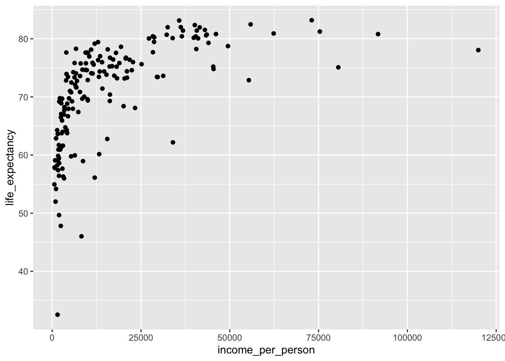
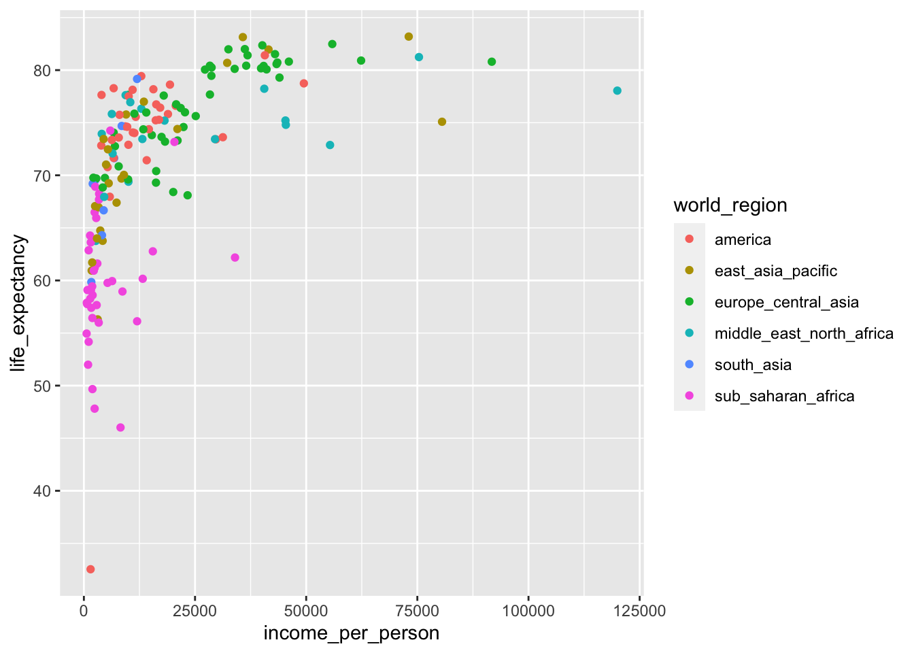
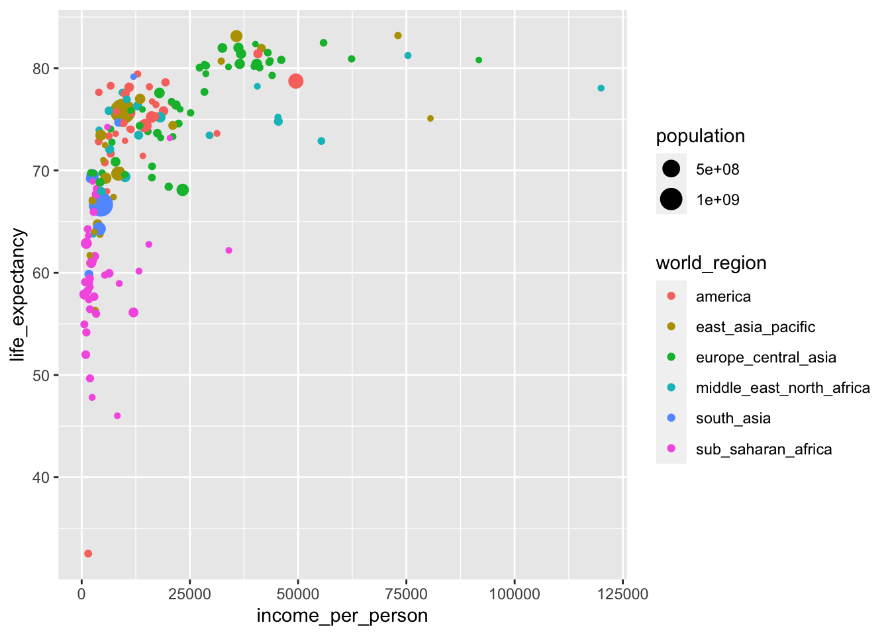
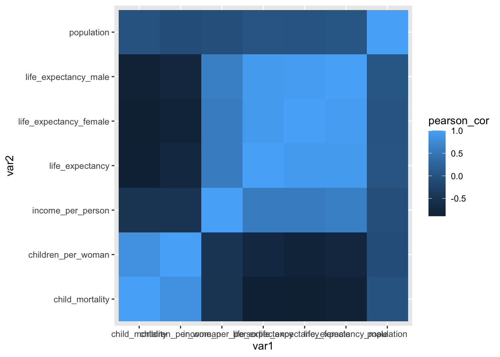
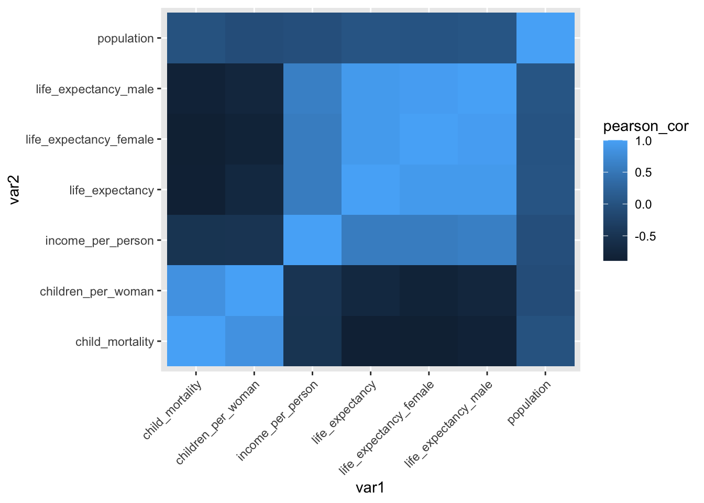

library(tidyverse)
library(visdat)10 Finding correlations
Learning outcomes
- Be able to find correlations within data
- Know how to visualise and interpret correlations
10.1 Libraries and functions
Click to expand
10.1.1 Libraries
10.1.2 Functions
10.2 Purpose and aim
When we set off to gather or explore data, we generally have a research question that we’re interested in. We then design an experiment to test this question - in that case our data helps us to find an answer.
Quite often we gather a lot more data than we directly need to answer our research question. As such, it’s often very useful to explore our data and look for patterns or correlations.
For the next few sections we’re moving away from finches and instead are using the gapminder data set. The snippet of data we’re providing in data/gapminder_clean.csv contains socio-economic data for lots of different countries.
10.3 Loading data
The first step to exploring our data is of course loading it in the first place.
gapminder <- read_csv("data/gapminder_clean.csv")The gapminder data set that we’ve loaded has 13 different variables, with observations for over 150 different countries in the year 2010.
10.4 Correlating variables
To illustrate how we can use correlate variables to one another, we’re going to focus on life_expectancy in different contexts.
Let’s start off with a simple scatter plot that looks at life_expectancy against income_per_person:
ggplot(data = gapminder,
aes(x = income_per_person,
y = life_expectancy)) +
geom_point()
It seems that as the income per person increases, so does the life expectancy. We can also see that the life expectancy kind of plateaus - which is not very surprising, since it can’t go on indefinitely!
Looking at this plot, it’s quite striking how there is quite a range of life expectancy values at the really low income countries. We know that there is information on different world regions in the data (world_region). Perhaps there are certain world regions that have particularly low income levels?
This is something we can easily check.
We simply adjust the previous plot by colouring our data by world_region:
ggplot(data = gapminder,
aes(x = income_per_person,
y = life_expectancy,
colour = world_region)) +
geom_point()
Looking at this plot it appears that most of the low-income countries are in sub-Saharan Africa.
We could explore this even further by, for example, adding information on the population size to the plot:
We can adjust the previous plot by adding size to our plot, based on population:
ggplot(data = gapminder,
aes(x = income_per_person,
y = life_expectancy,
colour = world_region,
size = population)) +
geom_point()
Important
It’s easy to add too much information to a single plot. In the example above, we’re actually plotting four different variables in a single plot:
income_per_personon the x-axislife_expectancyon the y-axisworld_regionas colourpopulationas size
Whether this helps convey whatever message you have is not exactly clear. We’ll talk more about the purpose of a plot and the audience in the next section.
10.4.1 Exercises
10.5 Visualising correlations
A standard method of looking for correlations is to use a correlation matrix. These are often generated by using Pearson’s r - a measure of correlation. If you’re interested in finding out more, see Core statistics 3: correlations.
This is not a statistics course, but what we’re doing here is focussing on how we can visualise such a matrix. A matrix is simply a data frame with just numerical values. The reason why we can’t use the entire gapminder data set is because we can’t calculate correlations between groups. After all, it wouldn’t make sense to explore if world region is correlated with main religion, for example!
Because we’re only able to calculate correlations between numerical variables, we first need pull out only those columns that are numeric. We’re also not interested in the year variable, because we know there is only one value in that one anyway (the year 2010),
gapminder %>%
select(where(is.numeric)) %>%
select(-year)# A tibble: 167 × 7
children_per_woman life_expectancy income_per_person population
<dbl> <dbl> <dbl> <dbl>
1 5.82 59.8 1672 29185511
2 6.16 59.9 6360 23356247
3 1.65 77.6 9928 2948029
4 1.87 72.9 55363 8549998
5 2.37 75.8 18912 40895751
6 1.55 74.0 6703 2877314
7 2.13 76.6 20660 88030
8 1.93 82.0 41530 22154687
9 1.44 80.6 43336 8409945
10 1.96 69.3 16216 9032465
# ℹ 157 more rows
# ℹ 3 more variables: child_mortality <dbl>, life_expectancy_female <dbl>,
# life_expectancy_male <dbl>After this, we can calculate the correlation matrix.
One of the ways we can do this is by using the cor() function:
gapminder %>%
select(where(is.numeric)) %>%
select(-year) %>%
cor(method = "pearson") children_per_woman life_expectancy income_per_person
children_per_woman 1.00000000 -0.72197292 -0.49069393
life_expectancy -0.72197292 1.00000000 0.57306921
income_per_person -0.49069393 0.57306921 1.00000000
population -0.08242701 0.02021798 -0.05518878
child_mortality 0.83205416 -0.87918658 -0.50622105
life_expectancy_female -0.82605805 0.93001838 0.57434713
life_expectancy_male -0.75909310 0.93125439 0.61432730
population child_mortality life_expectancy_female
children_per_woman -0.082427010 0.832054159 -0.82605805
life_expectancy 0.020217982 -0.879186584 0.93001838
income_per_person -0.055188782 -0.506221048 0.57434713
population 1.000000000 -0.005857309 0.01509248
child_mortality -0.005857309 1.000000000 -0.89127415
life_expectancy_female 0.015092483 -0.891274153 1.00000000
life_expectancy_male 0.032751043 -0.843957872 0.96776823
life_expectancy_male
children_per_woman -0.75909310
life_expectancy 0.93125439
income_per_person 0.61432730
population 0.03275104
child_mortality -0.84395787
life_expectancy_female 0.96776823
life_expectancy_male 1.00000000This is of course a hideously large table, which is almost impossible to interpret. But that’s the point! It’s much easier to use a visual representation of these data. Well, once the data are in the right format, that is.
Don’t worry if the data wrangling is a bit overwhelming, at this stage it’s not essential that you understand that bit of code - but more that you’re able to see how we can visualise these data.
gapminder_cor <- gapminder %>%
select(where(is.numeric)) %>%
select(-year) %>%
cor(method = "pearson") %>%
as_tibble(rownames = "var1") %>%
pivot_longer(cols = -var1,
names_to = "var2",
values_to = "pearson_cor") %>%
mutate(pearson_cor = round(pearson_cor, digits = 3)) %>%
drop_na()This gives us a table with the following format:
head(gapminder_cor)# A tibble: 6 × 3
var1 var2 pearson_cor
<chr> <chr> <dbl>
1 children_per_woman children_per_woman 1
2 children_per_woman life_expectancy -0.722
3 children_per_woman income_per_person -0.491
4 children_per_woman population -0.082
5 children_per_woman child_mortality 0.832
6 children_per_woman life_expectancy_female -0.826We can then plot the correlation matrix, plotting var1 on the x-axis and var2 on the y-axis. To aid visualisation, we’re using the geom_tile() geometry, which creates a tile plot. The colour of each tile depends on the value of the correlation coefficient (pearson_cor). Together, this creates a heatmap of the data, where the values are depicted by colour.
ggplot(data = gapminder_cor,
aes(x = var1, y = var2, fill = pearson_cor)) +
geom_tile()
Annoyingly, the x-axis labels are a bit obscured, so improve readability we rotate them 45 degrees. This is not entirely intuitive, but a quick Google search using the phrase “rotate text label ggplot” brings us to an answer on Stackoverflow that we can easily adapt.
ggplot(data = gapminder_cor,
aes(x = var1, y = var2, fill = pearson_cor)) +
geom_tile() +
theme(axis.text.x = element_text(angle = 45, hjust=1))
The variables across the diagonals are perfectly correlated (with a correlation coefficient of 1). This makes sense because, for example, child_mortality would be perfectly correlated with… itself!
Other notable things are that the male/female life expectancy variables are quite highly correlated with overall life expectancy.
The correlation between life expectancy and income (which we explored previously using the scatter plot) is also reasonably strong and positive.
Several variables are negatively correlated with one another, such as child mortality and life expectancy. This sad example makes sense, because if the child mortality rate in a country is high, it’s not inconceivable that this has an effect on the overall life expectancy in that country.
10.6 Summary
Key points
- We can find correlations by calculating correlation coefficients
- Scatter plots allow us to visualise correlations between two variables
- Tile plots or heatmaps are useful to visualise large numbers of correlations